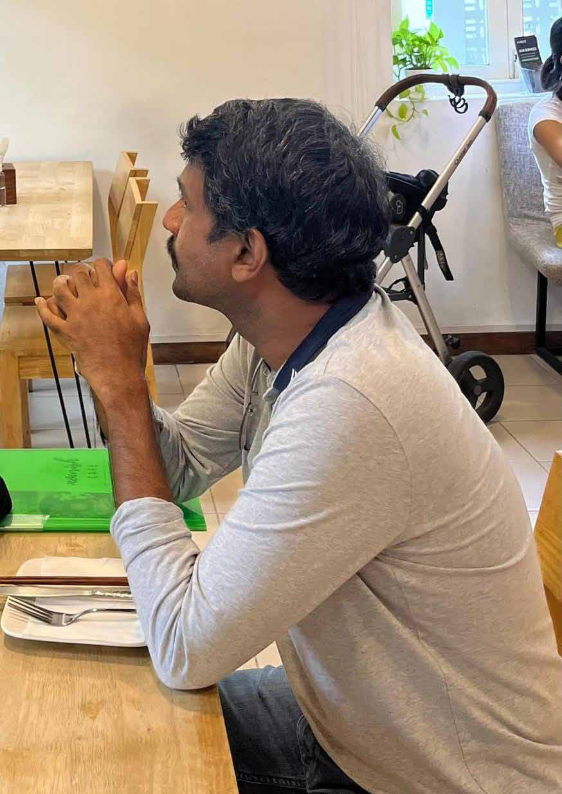
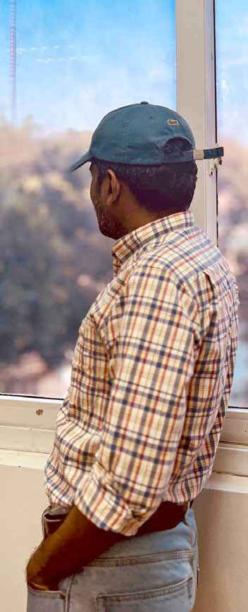

Humanitarian
Humanitarian
Jaffna Monitor
hellojaffnamonitor@gmail.com
41
Niththilan (name changed), a former United
Nations worker of immense bravery, witnessed
the harrowing final stages of Sri Lanka's war in
2009. As one of the few remaining individuals
who can testify to the atrocities committed
by both the Sri Lankan government and the
LTTE, Niththilan played a critical role during
this period.
In September 2008, following the directive to
evacuate UN and international humanitarian
organizations from LTTE-controlled
territories, he was appointed as the officer
in charge of all UN operations in the region.
Leading the UN mission within LTTE-
Diaries
A UN Worker's Exclusive Testimony to
'Jaffna Monitor' on the 15th Anniversary
of Sri Lanka's Brutal War Conclusion
Part-4
Humanitarian
Interview
BY:
Kaniyan Pungundran
fzpad; G+q;Fd;wd;
Jaffna Monitor hellojaffnamonitor@gmail.com 42 controlled areas, he directed local staff in the absence of his international colleagues. Currently residing in Europe, Niththilan has chosen to break his silence and share his experiences with 'Jaffna Monitor' under the condition of anonymity. How did you manage to escape from the LTTE that night? Our journey began sometime between 1:30 and 2:00 AM. It was a spine-chilling journey indeed. I carried my child as I walked, with my team following closely behind me. The night was dark, and the air was thick with tension and fear. Every step we took was cautious, as we knew the dangers that lurked around us. In Nandikadal, the battlefield was scarred by the relentless shelling, leaving behind massive craters. As we made our way through the treacherous terrain, my daughter and I fell into one such crater—a vast pit about 15-20 feet deep. The shock of the fall was overwhelming, but I managed to escape because I knew how to swim, pulling my daughter to safety. Following this, my close friend Luckumar, a former Sewa Lanka Foundation worker who accompanied us, went ahead and instructed others to follow him. He played a crucial role in our escape from the LTTE-controlled area. Luckumar was instrumental in negotiating a deal with the Tigers guarding the defense position. We bribed the fighters guarding one checkpoint and managed to pass through their area to reach the sea. However, with multiple checkpoints nearby, we constantly feared being shot by guards at another checkpoint. Thankfully, they did not shoot. By around 4:30 AM, we reached the vicinity of the army area and loudly declared ourselves as United Nations personnel. An army officer called out my name, asking, "Are you Mr. ...?" To my surprise, he continued, "Welcome, sir. We have been waiting for you for the past three days. Unfortunately, we can't open the gate right now. Please wait until 6 AM." So, we waited near the shore. I later learned that my office in Vavuniya had informed them of our arrival. Knowing that we, the United Nations personnel, had escaped, the Tigers launched their fiercest shell attack around 5:30 AM. They targeted us ruthlessly, not just with shells but also with RCL and RPG guns. Shells fell very close to us. Having crossed the dangerous Nandikadal, I believed we were about to be killed on the shore in the Tigers' shelling. Terrified, we all buried our heads in the sand. Along with us, hundreds of people who had escaped that night were on the shore, all waiting to enter the army-controlled area at dawn. In retaliation, the army conducted a fierce shelling attack from their tanks towards the LTTE-controlled area, particularly targeting the spots where the shells had come from. Sadly, I believe many people in the LTTE- controlled area must have been killed by the army's retaliatory fire. How can you be sure that the Tigers targeted only the escaping United Nations personnel? I can confirm it based on the timing of the attack. They attacked in anger upon realizing that the last UN team had escaped their control. What happened next? In the aftermath of the attack, the army
Jaffna Monitor hellojaffnamonitor@gmail.com 43

Jaffna Monitor hellojaffnamonitor@gmail.com 44 opened the gate before 6 AM and let us into their controlled area. An officer, a Lieutenant Colonel, came to welcome us. He mentioned they had been waiting for us for three days. Indeed, we had been trying to escape for the previous three days but couldn't. They welcomed us and provided us with bread and fish curry, which was a luxurious meal for us, as we hadn't seen such food in about five months. The military officer approached me with evident discomfort and said, "I'm sorry, sir. We are compelled to conduct a strip search. I deeply regret this necessity." He explained that a month before, in Vishvamadu, amidst innocent civilians, a female suicide bomber had detonated, claiming numerous lives. "Since that harrowing event, we've instituted a stringent entry protocol that includes a complete strip search," he added. He further explained that men and women would be searched separately, and everyone would be searched alone. I responded, "If that's the procedure, proceed as such." But deep inside, I felt humiliated. Post-search, we were provided military jeeps to reach Thevipuram School. While others were processed quickly and sent to camps in Vavuniya, our group experienced an unexpected delay. Curious about the holdup, I inquired and was informed that someone of significant stature was en route to meet me. By around 12:30 PM, the scene transformed dramatically. Two armored vehicles rolled in, flanked by a convoy of security motorcycles and vehicles, signaling the arrival of a high- ranking official from the Sri Lankan military. Stepping out amidst the security detail, this tall, imposing figure approached me directly, asking my name with a stern but focused demeanor. To be continued... Note: This testimony will conclude in the next issue.

Jaffna Monitor hellojaffnamonitor@gmail.com 45 In a not-so-surprising turn of events, Wanindu Hasaranga has decided to step down as the captain of the Sri Lankan Men's T20I team. Despite facing criticism for his leadership during the team's early and disappointing exit from the T20 World Cup, Hasaranga's resignation letter to Sri Lanka Cricket CEO Ashley De Silva emphasized his unwavering commitment to the team as a player. Hasaranga, known for his fiery and often controversial demeanor on the field, acknowledged that his intense attitude has sometimes led to disciplinary issues and SPORTS Wanindu Hasaranga's Exit: The Captaincy, The Apologies, and the Unwanted Wisdom BY: Our Sports Correspondent
Jaffna Monitor hellojaffnamonitor@gmail.com 46 misunderstandings. However, he offered a philosophy that might make even a few yogis raise an eyebrow: "I have at all times expressed emotion on the field, and such an attitude has helped me overcome challenges and inspire myself to do better. This is in no way aimed to offend anyone," he said, yet showing gentlemanly conduct by offering sincere apologies to anyone who might have been offended by his remarks made in frustration. The all-rounder's resignation comes after a disappointing performance at the recent T20 World Cup, where Sri Lanka's early exit left fans and the team disheartened—and, of course, angry. Reflecting on the campaign, Hasaranga admitted, "Sri Lanka's early exit at the T20 World Cup is extremely disappointing to me as the Captain and for the entire team." In his resignation, Hasaranga took full responsibility for the team's performance, expressing regret for not delivering better results. "The team and I have let our country down," he stated, apologizing to the nation and Sri Lanka Cricket. He emphasized his intention to continue serving the team as a player, aiming to focus on his individual performance. "I feel my performances at my peak were extremely helpful to bring about victories to our nation," he said, vowing to maintain high standards and support the team in any capacity. Predictably, Sri Lanka Cricket has accepted Hasaranga's resignation and acknowledged his continued importance to the team's international strategies. The board emphasized that Hasaranga will remain a pivotal player whose contributions to the field are invaluable.